Ceux que nous utilisons en cabine, et ceux que vous emportez.
Les produits de la marque belge Care Personal Beauty : ceux de vos soins en cabine, et ceux de votre routine à la maison. Conseillés après votre bilan, en vente uniquement à l'institut.
Filtrez par étape de routine ou par gamme : 3 produits affichés sur 20, tous choisis avec vous après votre bilan. Prix indicatifs, confirmés à l'institut.
En vente uniquement à l'institut, conseillés après votre bilan. Pas de boutique en ligne ni d'envoi : nous vous remettons vos produits sur place, avec les gestes qui vont avec.
Étape
Gamme
Essentials01 · Nettoyer
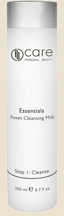
Reset Cleansing Milk
Lait démaquillant doux. Il nettoie sans décaper et prépare la peau à recevoir les produits suivants. Le nettoyant de la plupart des routines.
41 €200 ml
Toutes peaux
Peaux sèches
Essentials01 · Nettoyer
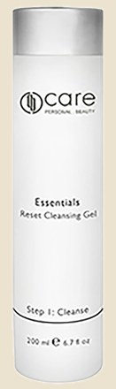
Reset Cleansing Gel
Gel nettoyant apaisant, pour les peaux sensibles et les peaux mixtes qui préfèrent une texture fraîche. Il nettoie sans faire briller.
41 €200 ml
Sensibilité
Sébum
Essentials01 · Nettoyer
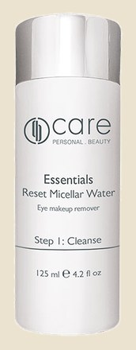
Reset Micellar Water
Eau micellaire pour démaquiller les yeux et le visage, avant le lait ou le gel. Le premier geste du soir.
31 €125 ml
Démaquillage
Contour des yeux
Essentials02 · Tonifier
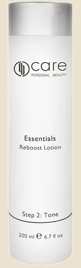
Reboost Lotion
Lotion tonifiante qui relance la microcirculation et aide la peau à se défendre contre le vieillissement. Après le nettoyage, avant le sérum.
41 €200 ml
Éclat
Toutes peaux
Essentials03 · Gommer
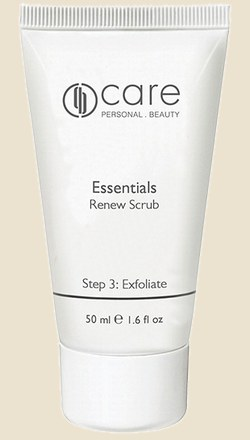
Renew Scrub
Gommage à texture gel-crème, assez doux pour les peaux sensibles et réactives. Une à deux fois par semaine, il retire les cellules mortes et relance le renouvellement. Le produit Care le plus demandé.
49 €50 ml
Texture
Pores
Éclat
HydraPower05 · Sérum
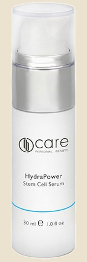
HydraPower Stem Cell Serum
Sérum gel léger, non gras, qui lisse les ridules de déshydratation et soutient l'élasticité. Le premier produit qu'on conseille quand la mesure d'hydratation est basse.
91 €30 ml
Hydratation
Rides
HydraPower06 · Crème
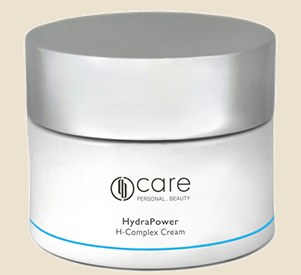
HydraPower H-Complex Cream
Crème jour et nuit pour les peaux déshydratées, qui tiraillent ou marquent. Elle retient l'eau et calme la sensation d'inconfort.
90 €50 ml
Hydratation
Nutrition
HydraPower04 · Masque
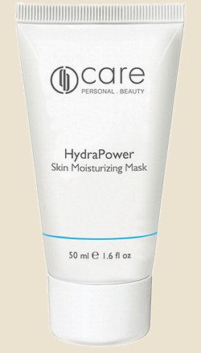
HydraPower Skin Moisturizing Mask
Masque hydratant à poser une à deux fois par semaine. Un coup de pouce quand la peau a soif, en saison froide ou après le soleil.
49 €50 ml
Hydratation
Éclat
IntenseCalm05 · Sérum
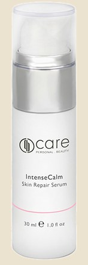
IntenseCalm Skin Repair Serum
Sérum à l'allantoïne et au collagène. L'une calme les irritations, l'autre soutient l'élasticité et la fermeté des peaux réactives.
94 €30 ml
Sensibilité
Rougeurs
IntenseCalm06 · Crème
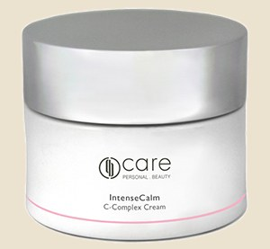
IntenseCalm C-Complex Cream
Crème jour et nuit apaisante et très hydratante pour les peaux sensibles qui rougissent. Elle agit sur le mécanisme de l'inflammation plutôt que de le masquer.
90 €50 ml
Sensibilité
Rougeurs
IntenseCalm04 · Masque
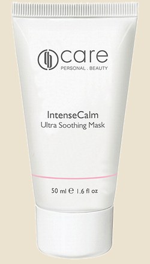
IntenseCalm Ultra Soothing Mask
Masque crémeux qui apaise et réduit les rougeurs. Le phytosqualane forme un voile protecteur qui retient l'eau dans la peau.
53 €50 ml
Rougeurs
Sensibilité
PurActiv05 · Sérum
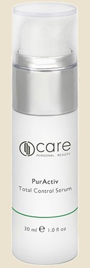
PurActiv Total Control Serum
Sérum matifiant longue durée pour les peaux qui brillent dès midi et dont les pores se voient. Il régule sans dessécher.
91 €30 ml
Sébum
Pores
PurActiv06 · Crème
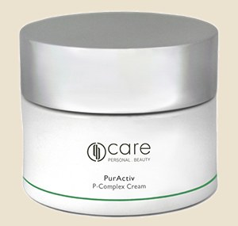
PurActiv P-Complex Cream
Crème jour et nuit qui réduit la production de sébum et la brillance, et resserre les pores. Pour les peaux mixtes à grasses.
90 €50 ml
Sébum
Pores
Impuretés
PurActiv04 · Masque
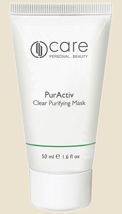
PurActiv Clear Purifying Mask
Masque purifiant à l'argile verte, à texture absorbante. Il capte l'excès de sébum, les toxines et les impuretés sans agresser la peau.
49 €50 ml
Impuretés
Sébum
Pores
A.G.E. Care05 · Sérum
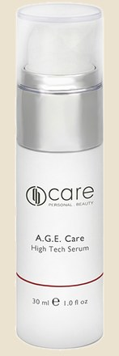
A.G.E. Care High Tech Serum
Sérum anti-âge à quatre actifs : un hexapeptide qui détend les rides d'expression, de l'ADN végétal antioxydant, du sulfate de chondroïtine pour le collagène et l'élastine, et de la vitamine A pour le renouvellement. Une fois par jour, avant la crème.
128 €30 ml
Rides
Fermeté
A.G.E. Care06 · Crème
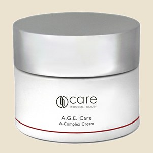
A.G.E. Care A-Complex Cream
Crème jour et nuit au complexe anti-âge breveté par les laboratoires Care. Elle lisse l'apparence des rides et protège des agressions extérieures. Existe en version Light pour les peaux mixtes et Rich pour les peaux sèches.
117 €50 ml, Light ou Rich
Rides
Fermeté
Nutrition
A.G.E. Care04 · Masque
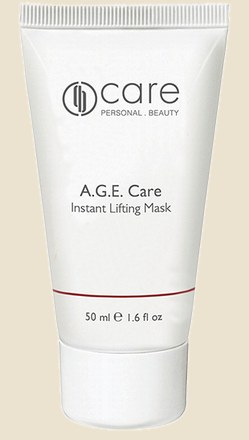
A.G.E. Care Instant Lifting Mask
Masque au collagène qui estompe rides et ridules et assouplit la peau. L'effet se voit tout de suite, ce qui en fait le masque d'avant une occasion.
63 €50 ml
Fermeté
Rides
Yeux05 · Sérum yeux
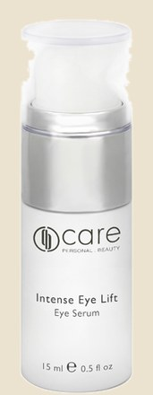
Intense Eye Lift
Sérum gel léger pour le contour des yeux : rides, cernes et poches. L'hamamélis décongestionne, un dérivé du menthol rafraîchit, une biosaccharide hydrate et apaise.
90 €15 ml
Rides
Cernes et poches
Suncare06 · Protection
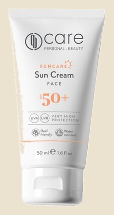
Sun Cream Face SPF 50+
Crème solaire visage légère et sans huile, pensée pour les peaux sensibles. Acide hyaluronique, carnosine et vitamine E, haute protection UVA et UVB. Le geste qui empêche les taches de revenir.
49 €50 ml
Taches pigmentaires
Rides
Suncare06 · Après-soleil
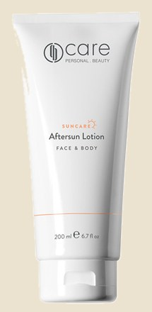
Aftersun Lotion Face & Body
Lotion après-soleil pour le visage et le corps. Elle apaise, réhydrate et prolonge le confort de la peau après une journée au soleil.
XX €200 ml
Après-soleil
Apaisant
Vous pouvez aussi passer chercher vos produits sans rendez-vous, aux heures d'ouverture. Nous vous conseillons toujours d'après votre dernier bilan.
La routine Care
Six étapes, dans cet ordre.
Matin et soir pour quatre gestes, une à deux fois par semaine pour le gommage et le masque. Votre bilan décide du produit à chaque étape. Nous commençons souvent par l'essentiel : nettoyant, lotion, crème, et le reste quand la routine est installée.
01
Nettoyer
Lait, gel ou eau micellaire Reset. La peau propre reçoit mieux tout ce qui suit.
02
Tonifier
La Reboost Lotion relance la microcirculation et prépare la peau.
03
Gommer
Le Renew Scrub, une à deux fois par semaine, retire les cellules mortes.
04
Masque
Une à deux fois par semaine, le masque de votre gamme : hydratant, apaisant, purifiant ou liftant.
05
Sérum
Le concentré d'actifs, choisi d'après votre bilan. Le contour des yeux a le sien.
06
Crème et protection
Crème jour et nuit de votre gamme, puis protection solaire le matin.
Votre routine commence par votre bilan.
Réservez votre bilan de peau, et repartez avec les produits dont votre peau a besoin, pas un de plus.
Nous utilisons des cookies de mesure d'audience pour comprendre comment le site est consulté et améliorer nos campagnes. Vous pouvez refuser. En savoir plus